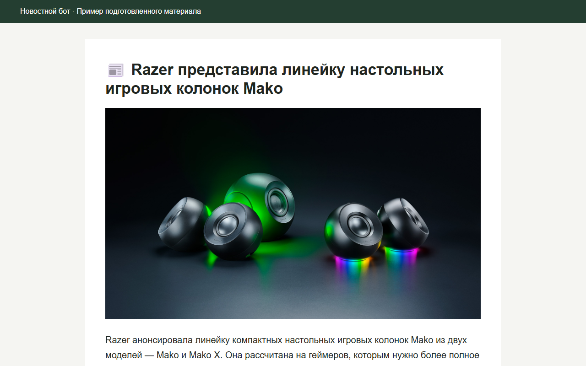

01 · Автоматизация контента
Новостной Telegram-бот
От материалов из нескольких источников до публикации на русском языке.
Задача
Объединить новости из RSS, YouTube и email-рассылки в одном процессе: находить новые материалы, отбирать подходящие и готовить публикации для Telegram.
Мой вклад
Разработал бота, подключил источники и LLM. Настроил отбор и адаптацию материалов: подробный обзор для новых устройств и краткое изложение для событий и анонсов.
Результат
Бот собирает материалы, обрабатывает текст и публикует русскоязычные сообщения с изображениями и ссылками на источники. На странице показан сохранённый пример подготовленного материала о продуктах Razer.
Python · RSS · IMAP · LLM API · Telegram Bot API · SQLite

Пример подготовленного материала
Короткий обзор результата LLM-обработки. Видео показывает сохранённый материал.